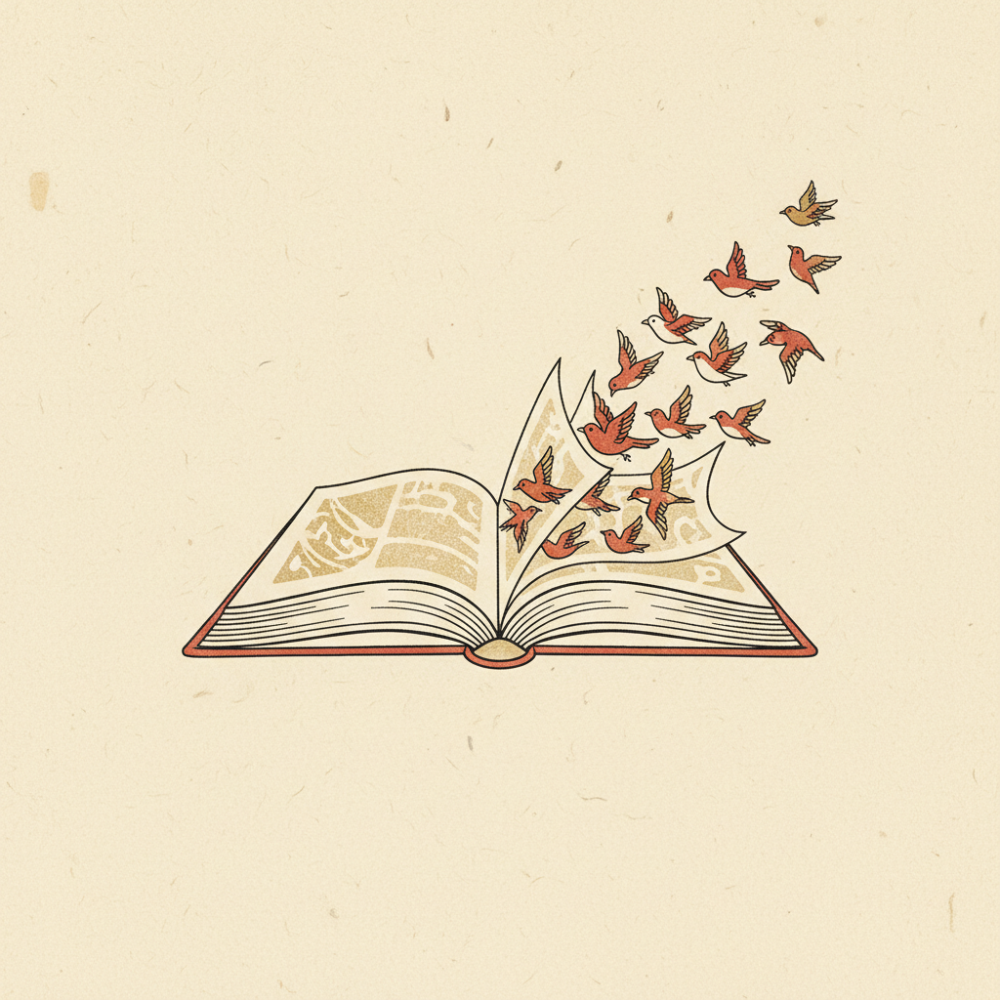

致 智慧閱讀平臺建置廠商・凌網資訊
就「線上資料庫介接所需的身分驗證」交換想法，並提出本中心可提供的協助。
本簡報會後仍可隨時開啟瀏覽；如需進一步討論，歡迎以 email／電話與組長直接聯繫（末頁有窗口）。
智慧閱讀要承接現行線上資料庫（onlinedb，115/12/31 停服），其介接規格的核心，就是讓使用者能「被正確驗證身分後借閱」。
規格（V1.5）以 getAuthentication 進行身分驗證，並以 loginMode 代碼指定驗證來源。其中臺北市同時支援 單一身分驗證 SSO（代碼 1） 與 教育雲 OPEN_ID（代碼 16） — 後者就是今天要談的「教育雲介接」。
線上資料庫的驗證會用到教育雲（教育部教育體系單一簽入／OpenID），因此我們想先確認凌網在這一塊的熟悉度與作法。
講白一點：這題不是考試，是盤點落差 — 凌網越早讓我們知道哪裡需要支援，本中心越能及時補位。
據我方了解，凌網先前已有串接臺北市單一身分驗證（SSO）的經驗。
這代表 OAuth／導向登入、token 取用、使用者資料對應等基本功，凌網是熟悉的。
教育雲（教育部 OpenID）與臺北市 SSO 是不同的驗證來源，流程相近但端點與帳號體系不同。
想確認：凌網是否同樣涵蓋教育雲，或需要本中心提供協助。
既有 SSO 經驗是很好的起點 — 我們樂觀地認為，教育雲介接對凌網而言是「延伸」而非「從零開始」。今天就把這個差距談清楚。
⚠️ 誠實告知：原始碼能否取得仍在洽詢中（涉及原維運廠商之著作權與授權條件）。此項屬「若拿得到就提供」的善意協助，不是已到位的交付。
數位學習中心自建的多套系統，已實際串接過臺北市身分驗證／教育雲，我們可把這些經驗一併整理給凌網。
這兩項協助（原始碼 ＋ 其他系統經驗）會視取得情況陸續提供；請凌網先讓我們知道，最需要哪一塊的支援。
這是線上資料庫的官方介接規格書，凌網實作介接時的主要依據。規格書全文由本中心私下提供，以下先摘要其 4 支 API。
📎 介接文件不放公開網路：線上資料庫介接規格 V1.5、以及教育雲（單一身分驗證）介接手冊，本中心將於會後另以 email／限閱方式提供凌網，並可一併附上中心既有系統的介接設定參考。
提醒：智慧閱讀規格為跨縣市共用，身分驗證請不要只綁臺北市 — 規格 loginMode 亦含澎湖（2）、金門（4）、連江（8），可視需求相加。
本中心立場：教育雲介接不是把難題丟給凌網 — 原始碼、其他系統經驗、規格附件我們都會盡力備齊。今天請凌網先告訴我們：哪裡需要幫忙。